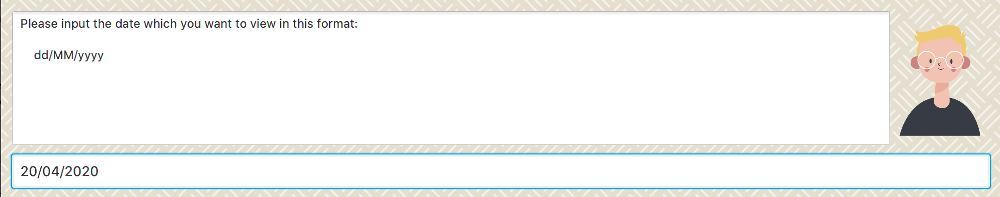

Overview
StudyBuddy is a desktop application designed for students who wish to manage their module related tasks in a convenient and user-friendly interface. It is optimized for those who prefer to work with a Command Line Interface (CLI) but still contains the benefits of Graphical User Interface (GUI). The codebase is in Java and contains about 13kLoc.
Summary of contributions
Enhancements
Major enhancements
-
Added a calendar to Study buddy.
-
What it does:
-
The calendar allows users to have an overview of all the tasks that has to be done.
-
Calendar also allows you to view all tasks due on the day the user clicks on.
-
-
Justification:
-
This feature is important as the task list will be too cluttered without it.
-
A calendar gives a good indication of how busy the user is going to be.
-
-
Highlights
Challenges faced when implementing this feature:
-
Had to learn what the different panes and objects in javafx does and choose the most suitable one for the feature
-
There was an 50% chance (tested) the click event would return the wrong object, leading to complications. This meant that tasks cannot be within the calendar itself. I had to reverse engineer the algorithm used to generate a calendar and use that data to find tasks for the date the user clicked on.
-
-
-
Archive and unarchive
-
What it does:
-
Allows users to store their task into a separate archive list
-
Unarchive retrieves tasks from archive list and stores it into the main list
-
-
Justification:
-
Archive allows users to store task that they have completed or do not wish to look at right now, while still keeping those tasks in check.
-
This is important as users sometimes do not wish to delete a task they completed.
-
-
Highlights:
-
This feature was not particularly difficult to implement. However, as it is the first feature to be pushed to address book, I had to carefully trace and modify the code to make sure it did not break address book.
-
-
Minor enhancements
-
Calendar view command
-
Calendar view command was created in response to an issue that claimed the app is not CLI friendly.
-
This command allows a user to jump to any date they want to on the calendar.
-
It also serves as a way to find tasks by date.
-
User guide contributions
Given below is a section that I contributed to the User Guide. It showcases my ability to write documentation targeting end-users.
Calendar
(contributed by gexiang)
Constraints
-
The calendar GUI does not work well if the window size is set too small.
-
You will not be able to navigate too far into the past/ future using CLI.
The calendar feature allows you to visualise your schedule by displaying the number of task you have for the month. This allows students to plan their time efficiently.
The calendar feature can be toggled by clicking Calendar from the menu bar.
-
PreviousandNextbuttons can be used to navigate through previous and next months respectively.Current monthbutton brings you to the current date, which is in a blue border. -
Clicking on any date will show you all tasks for that day. Keep in mind that the Index shown in this panel cannot be used for other commands.
Navigation using CLI
Study buddy also allows you to navigate to any date in the Calendar.
-
To initiate fast navigation, simply key in
calendarinto the input line. -
Study buddy will ask you for a date
Figure 3. Interactive prompt after keying in calendarIn this example, we entered
20/04/2020. -
Input your date using the format shown and press enter once to proceed.
-
Press enter again to confirm your command.
You will now see the calendar for your selected date as well as all the tasks on that day.
Developer Guide contributions
Given below are some sections I contributed to the Developer Guide. They showcase my ability to write technical documentation and the technical depth of my contributions to the project.
Calendar feature
Implementation
The calendar feature displays a calendar for users.
The feature is implemented by overriding the task list display panel on the main window with calendar box. The calendar currently supports following features:
-
Displays the name of all tasks on that day in the calendar grid.
-
Access calendars in previous or next month using the buttons on top.
-
Displays more information about tasks for the day on the Due Soon panel after clicking on a grid.
-
Fast forward to a specific year/month using CLI.
When a calender is requested, a CalendarPanel object is constructed, the object diagram below shows the structure of a CalendarPanel. We will be using the date 01/04/2020 as an example.

Tasks shown in calendar will automatically be updated upon using any of the following commands:
-
add -
delete -
archive -
unarchive -
Any other commands that modifies the task list
Example usage scenarios
Using mouse click
Clicking on the show calendar menu item under the calendar menu will enable this feature. Upon requesting for the calendar to be shown:
-
The calendar box object will be constructed
-
The calendar loops through every day of the month while searching for tasks due on that day
-
The task name is added to the calendar grid
Using CLI
As of Study Buddy v1.4, a new feature has been added that allows users to navigate the calendar using CLI.
-
The user enters 'calendar' into the command box.
-
The user enters the selected date into the command box.
-
Calendar will be generated the same way as a mouse click, however, it will use the entered date as parameters.
It is implemented by getting the latest instance of MainWindow and directly changing the UI by calling handleShowCalendar().
Below is an activity diagram describing the events that will happen:

Design considerations
-
It is more efficient to cache the calendar rather than to generate a new one, however, we do not expect the user to have too many tasks and therefore it should not slow down the application.
-
The implementation used for CLI involves a static method in MainWindow which might be unsafe, however, it was the best choice given the time constraints.
Archive feature
Archive stores selected task away into a separate task list, this command is used when the user has completed a task but still wants to keep track of it.
Implementation
Archive uses a new archive command. Upon executing the archive command, it will call the model to delete the task and archive it into another list stored within model.
The index for archived tasks are not used for any commands other than unarchive.
|
Sequence diagram:

| The lifeline for every member should end at the destroy marker (X) but due to a limitation of PlantUML, the lifeline reaches the end of diagram. |
Design consideration
There were two possible ways to store archived tasks:
-
Store it as a separate list
-
Add another field to task to keep track of its archived state
The first choice was chosen as it speeds up the runtime. Also, it makes it easier to manage the indexes.
[Proposed] Data encryption
Since Study Buddy is an offline application, there is no threat of being attacked via a network channel. However, in case the computer has a shared owner, a password feature can be implemented in the future for privacy purposes.
Implementation
The goal is to encrypt taskList3.json, while still allowing the owner to access his/her tasks using his password.
We will be using AES (Advanced Encryption Scheme) for encryption, and a slow hashing algorithm to derive a key from the user’s password. The slow hashing algorithm is to prevent brute force attacks.
Decryption
-
User enters a password.
-
If the password is correct, the same key should be hashed and taskList.json can be decrypted.
-
If the password is incorrect, user will be allowed to try again.
We leave it to the user’s own jurisdiction to create a strong password.